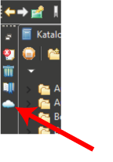
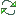

Tag Cloud
The Tag Cloud displays the most frequent indexed words found in image metadata (see Indexing). The font size of a displayed word reflects the frequency of the word.
The Tag Cloud can be opened by clicking on the tag cloud item in the Fast view bar (top left sidebar). To close the Tag Cloud click elsewhere. Alternatively, the Tag Cloud can be opened via Window>Show view>Management>Tag cloud
Context functions
- Select ... (
 ) Adds the specified word to the selection set
) Adds the specified word to the selection set - Deselect... (
 ) Removes the specified from the selection set
) Removes the specified from the selection set - Search for ... () Searches the current catalog (or the whole network) for images containing the specified words.
- Add ... to filter (). Adds the specified word to the filter set. From now on this word will be hidden from the tag cloud.
- Reset filter (). Removes all words from the filter - no words will be hidden from the tag cloud.
Local menu functions and tool buttons
- Colour scheme. Here you can choose between spring, summer, autumn, winter and four seasons colour schemes.
- Max words.
Here you can select the maximum number of words to be displayed in the
cloud. Note that displaying many words slows down the tag cloud.
- Search in network ().
Toggles the tag cloud mode between network mode and local mode. In
network mode the tag cloud will show words from allover the network (see Indexing) and searching for words will be propagated througout the network.
- Start search ().Searches the current catalog (or the whole network) for images containing the words in the selection set. Press Shift for configuring the search.
- Refresh (
 ). Reconstructs the tag cloud. You may want to use this function after a catalog change or a network change.
). Reconstructs the tag cloud. You may want to use this function after a catalog change or a network change. - Reset filter (). Removes all words from the filter - no words will be hidden from the tag cloud.
Mouse gestures
- Double click. Searched for the word under the mouse pointer.
- Ctrl + Double click. Searches for the AND-combination of all selected words.